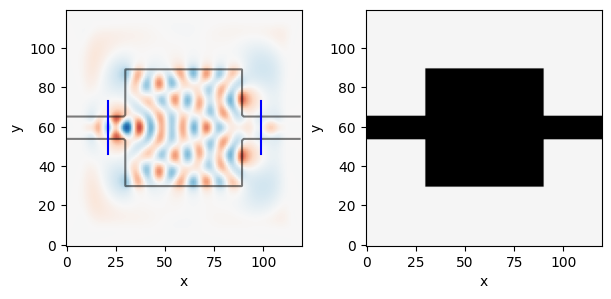

# Angular frequency of the source in Hz
omega = 2 * np.pi * 200e12
# Spatial resolution in meters
dl = 30e-9
# Number of pixels in x-direction
Nx = 120
# Number of pixels in y-direction
Ny = 120
# Number of pixels in the PMLs in each direction
Npml = 20
# Initial value of the structure's relative permittivity
epsr_init = 12.0
# Space between the PMLs and the design region (in pixels)
space = 10
# Width of the waveguide (in pixels)
wg_width = 12
# Length in pixels of the source/probe slices on each side of the center point
space_slice = 8
# Number of epochs in the optimization
Nsteps = 150
# Step size for the Adam optimizer
def step_size(idx):
"""reducing the stepsize linearly for Nsteps (stabilize afterwards just in case)"""
return np.maximum((5e-3)**(idx/Nsteps), 5e-3)Inverse Design Local
Using the local generator to do the inverse design
An Exception was encountered at ‘In [15]’.
This notebook overwrites the inverse design notebook to use the local_generator
epsr, bg_epsr, design_region, input_slice, output_slice = init_domain(
Nx, Ny, Npml, space=space, wg_width=wg_width, space_slice=space_slice
)epsr_total = mask_combine_epsr(epsr, bg_epsr, design_region)
# Setup source
source = insert_mode(omega, dl, input_slice.x, input_slice.y, epsr_total, m=1)
# Setup probe
probe = insert_mode(omega, dl, output_slice.x, output_slice.y, epsr_total, m=2)Prepare
brush = notched_square_brush(5, 1)
latent = new_latent_design((Nx, Ny), r=1)No GPU/TPU found, falling back to CPU. (Set TF_CPP_MIN_LOG_LEVEL=0 and rerun for more info.)# Simulate initial device
simulation, ax = viz_sim(epsr_total, source, slices=[input_slice, output_slice])
_, _, Ez = simulation.solve(source)
E0 = mode_overlap(Ez, probe)
Optimization
from inverse_design.local_generator import dilatebg_mask = np.logical_or(bg_epsr>2, design_region)
eroded = dilate(np.logical_not(bg_mask), brush)
dilated = dilate(bg_epsr>2, brush)
init_t_s = np.logical_not(np.logical_or(eroded, design_region))
init_t_v = np.logical_not(np.logical_or(dilated, design_region))
# plt.imshow(init_t_s, vmax=1, vmin=0)
# plt.figure()
# plt.imshow(init_t_v, vmax=1, vmin=0)latent_t = transform(latent, brush)
generate_feasible_design_mask(
latent_t, brush, init_touches_solid=init_t_s.copy(),
init_touches_void=init_t_v.copy(), verbose=False)Array([[-1., -1., -1., ..., -1., -1., -1.],
[-1., -1., -1., ..., -1., -1., -1.],
[-1., -1., -1., ..., -1., -1., -1.],
...,
[-1., -1., -1., ..., -1., -1., -1.],
[-1., -1., -1., ..., -1., -1., -1.],
[-1., -1., -1., ..., -1., -1., -1.]], dtype=float32)def forward(latent_weights, brush):
latent_t = transform(latent_weights, brush) #.reshape((Nx, Ny))
design_mask = generate_feasible_design_mask(latent_t,
brush, init_touches_solid=init_t_s, init_touches_void=init_t_v, verbose=False)
epsr = (design_mask+1.0)/2.0*(12-1) +1
# complicated expression to avoid where clause, as it caused problems with differentiation
# why did the np.where clause lead to 0 gradients?
return epsr@jaxit(cache=True)
def inner_loss_fn(epsr):
#print(".")
simulation.eps_r = mask_combine_epsr(epsr, bg_epsr, design_region)
_, _, Ez = simulation.solve(source)
return -mode_overlap(Ez, probe) / E0
def loss_fn(latent):
epsr = forward(latent, brush)
# def debug_plot(epsr):
# plt.figure(figsize=(0.5,0.5))
# plt.imshow(epsr)
# plt.axis("off")
# plt.show()
# jax.debug.callback(debug_plot, epsr)
return inner_loss_fn(epsr)Execution using papermill encountered an exception here and stopped:
loss_fn(latent)init_fn, update_fn, params_fn = adam(step_size)
state = init_fn(latent) #.flatten()this is the optimization step:
def step_fn(step, state):
latent = params_fn(state) # we need autograd arrays here...
loss, grads = grad_fn(latent)
#loss = loss_fn(latent)
optim_state = update_fn(step, grads, state)
optim_latent = params_fn(optim_state)
optim_latent = optim_latent/optim_latent.std()
return loss, init_fn(optim_latent)We can now loop over the optimization (let’s only do 5 iterations to avoid excessive computations):
Nsteps = 5range_ = trange(Nsteps)
losses = np.ndarray(Nsteps)
for step in range_:
loss, state = step_fn(step, state)
losses[step] = loss
range_.set_postfix(loss=float(loss))# Simulate and show the optimal device
epsr_optimum = forward(params_fn(state), brush)
epsr_optimum_total = mask_combine_epsr(epsr_optimum, bg_epsr, design_region)
simulation, ax = viz_sim(epsr_optimum_total, source, slices=[input_slice, output_slice])plt.plot(losses)
plt.xlabel("step number")
plt.ylabel("loss")